Released: February 6, 2013
Next Release: February 13, 2013
Announced Closure of Hess Corp.'s Port Reading Refinery Not Seen Having Major Impact on Gasoline Markets
On January 28, Hess Corp. announced plans to close its Port Reading, New Jersey, refinery by the end of February. Port Reading further processes feedstocks produced by other refineries. Futures prices for reformulated blendstock for oxygenate blending (RBOB) rallied on the news, as markets considered the impact the closure would have on gasoline supply to the Northeast (PADDs 1A and 1B) in the coming months. Given the refinery's location in New York Harbor, an actively traded physical market, the impact should not be significant. Absent other changes to the market, it should be neither difficult nor expensive to replace gasoline supplied by the shuttered refinery.
The Port Reading refinery has the capacity to process 70,000 barrels per day (bbl/d) of feedstock. Industry analysts have estimated that Port Reading can produce about 50,000 bbl/d of gasoline, which on average is about 3 percent of the gasoline consumed in the Northeast (Figure 1). Port Reading also produces smaller amounts of distillate fuels. The Port Reading refinery only has a fluid catalytic cracker (FCC); the refinery processes no crude oil. FCCs are secondary units that are designed to process cracking feedstocks, which are typically heavier liquids produced from refining crude oil into gasoline. While the FCC at Port Reading is a stand-alone unit, many refineries with crude distillation capacity also invest in FCCs to maximize their gasoline production.
{kind=link}
The Northeast relies on diverse sources for its gasoline supply. Through November 2012, the Northeast consumed 1.5 million bbl/d of gasoline. Net foreign imports and in-region refinery production (including Port Reading) are the two largest gasoline supply sources for the Northeast, respectively supplying 34 percent and 33 percent of consumption through November 2012 (for more detail, see EIA's February 2012 report). The Northeast received another 21 percent of its gasoline from other PADDs; most of these shipments were via pipeline from the Gulf Coast (PADD 3). Another 10 percent of gasoline was supplied in the form of ethanol. Draws from inventory made up the remainder of gasoline supply in 2012.
It is likely that imports or increased production from other East Coast refineries could make up for the decrease in production at Port Reading, which is estimated to have provided about 10 percent of total gasoline production in the Northeast region during 2012. Production from Northeast refineries in 2012 includes limited contributions from Monroe Energy's Trainer, Pennsylvania, refinery (185,000 bbl/d crude distillation capacity), which was returned to service in late September 2012 after being idle for a year. According to investor presentations, Monroe expects gasoline yields of 43 percent from Trainer, meaning that its gasoline production could be approximately 80,000 bbl/d. Netting out the effects of Trainer's return to service and the closure of Port Reading, the potential capacity to produce gasoline in the Northeast could be higher on average in 2013 than it was in 2012. The Northeast is also importing significantly less gasoline than it has in recent history. In 2012 through November, the Northeast imported an average of 525,000 bbl/d of gasoline, almost 200,000 bbl/d less than it imported in 2007. Thus, it is likely there is some flexibility to increase imports, both from the standpoint of gasoline production, principally in the Atlantic Basin, and from port capacity in New York Harbor. A significant increase in gasoline shipments to the Northeast from other PADDs is unlikely in the near term because additional capacity on the Colonial Pipeline, the major pipeline running from the Gulf Coast to New York Harbor, is limited.
The rally in RBOB futures prices that occurred when Hess announced the Port Reading closure reflected concerns about supply, which had been building. Gasoline inventories typically increase ahead of the summer driving season when gasoline demand typically peaks. With Port Reading scheduled to close, alternate sources of supply would be required. The concern was exacerbated by news of other refinery outages. Trade press reported that units were down at the Trainer refinery as well at Philadelphia Energy Solutions' 335,000 bbl/d Philadelphia refinery. In addition, a January outage at Essar Oil's Stanlow refinery in the United Kingdom contributed to tighter Atlantic Basin gasoline supplies. However, these outages reflect temporary market events rather than overall balances going forward, exemplified by Stanlow's return to operations in early February. As noted above, Port Reading supplies will either be replaced by other production in the Northeast or by imports. Because product markets price off the marginal barrel of supply, the closure should have little long-term effect on prices in the Northeast, where the marginal barrel of gasoline already comes from Europe. Moreover, gasoline inventories in the Northeast currently do not reflect a particularly tight supply-demand balance. On February 1, just after the closure announcement, Northeast gasoline inventories stood at 35.2 million barrels, 7 percent below the five-year average. On a days-of-consumption basis, inventory levels look healthier. End-of-January gasoline inventories in the Northeast are estimated at 24.9 days of consumption, compared to a five-year average of 24.0 days of consumption.
Gasoline and diesel fuel prices both see double-digit increases
The U.S. average retail price of regular gasoline increased 18 cents to $3.54 per gallon, up six cents from last year at this time. This is the largest one-week increase in the U.S. average gasoline price since February 2011. Prices increased in all regions of the nation for the second consecutive week. The largest increase came in the Midwest, where the price increased 22 cents to $3.51 per gallon. The West Coast price increased 19 cents to $3.74 per gallon, and the Gulf Coast price is up 17 cents to $3.33 per gallon. The Rocky Mountain price is $3.14 per gallon, an increase of 16 cents. Rounding out the regions, the East Coast price increased 14 cents to $3.59 per gallon.
The national average diesel fuel price increased 10 cents to $4.02 per gallon, 17 cents higher than last year at this time. Prices increased in all regions of the nation for the second consecutive week. The largest increase came on the West Coast, where the price increased 12 cents to $4.17 per gallon. The Midwest and Rocky Mountain prices are now $3.98 per gallon and $3.84 per gallon, respectively, both 11 cents higher than last week. The Gulf Coast price is up 10 cents to $3.94 per gallon, while the East Coast price increased seven cents to $4.09 per gallon.
Propane inventories decline
U.S. propane stocks fell 2.6 million barrels to end at 54.9 million barrels last week, 8.2 million barrels (18 percent) higher than a year ago. Midwest regional inventories dropped by 1.4 million barrels, while East Coast inventories declined by 0.7 million barrels. Gulf Coast stocks dropped by 0.2 million barrels, and stocks in the Rocky Mountain/West Coast region also declined by 0.2 million barrels. Propylene non-fuel-use inventories represented 5.4 percent of total propane inventories.
Residential heating fuel prices rise
Residential heating oil prices increased during the period ending February 4, 2013. The average residential heating oil price increased by almost 5 cents to $4.06 per gallon, 9 cents per gallon higher than the same time last year. Wholesale heating oil prices increased by nearly 12 cents to $3.31 per gallon, 10 cents per gallon higher than last year at this time.
The average residential propane price rose by less than a penny to just under $2.48 per gallon, 38 cents per gallon lower than the same period last year. Wholesale propane prices increased by a penny to $0.99 per gallon for the week ending February 4, 2013, 21 cents per gallon lower than the February 6, 2012 price.
Text from the previous editions of This Week In Petroleum is accessible through a link at the top right-hand corner of this page.
| 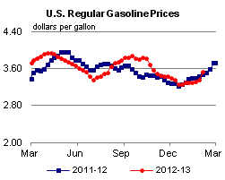 | 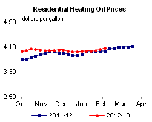 | ||||||
| 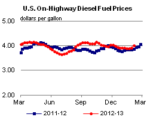 | 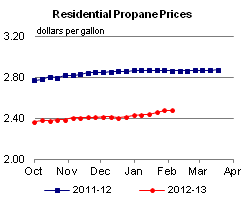 | ||||||
| Retail Data | Change From Last | Retail Data | Change From Last | ||||
| 02/04/13 | Week | Year | 02/04/13 | Week | Year | ||
| Gasoline | 3.538 | Heating Oil | 4.063 | ||||
| Diesel Fuel | 4.022 | Propane | 2.477 | ||||
| 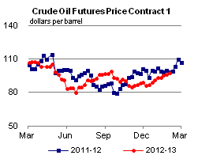 | 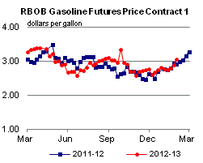 | ||||||||||||||||||||||||||
|
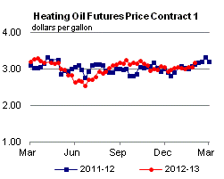 | ||||||||||||||||||||||||||
| *Note: Crude Oil Price in Dollars per Barrel. | |||||||||||||||||||||||||||
| 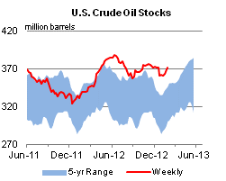 | 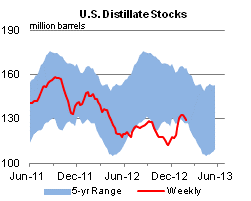 | ||||||
| 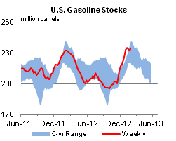 | 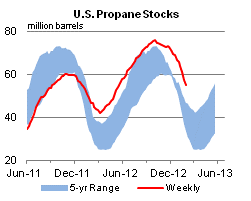 | ||||||
| Stocks Data | Change From Last | Stocks Data | Change From Last | ||||
| 02/01/13 | Week | Year | 02/01/13 | Week | Year | ||
| Crude Oil | 371.7 | Distillate | 129.6 | ||||
| Gasoline | 234.0 | Propane | 54.869 | ||||